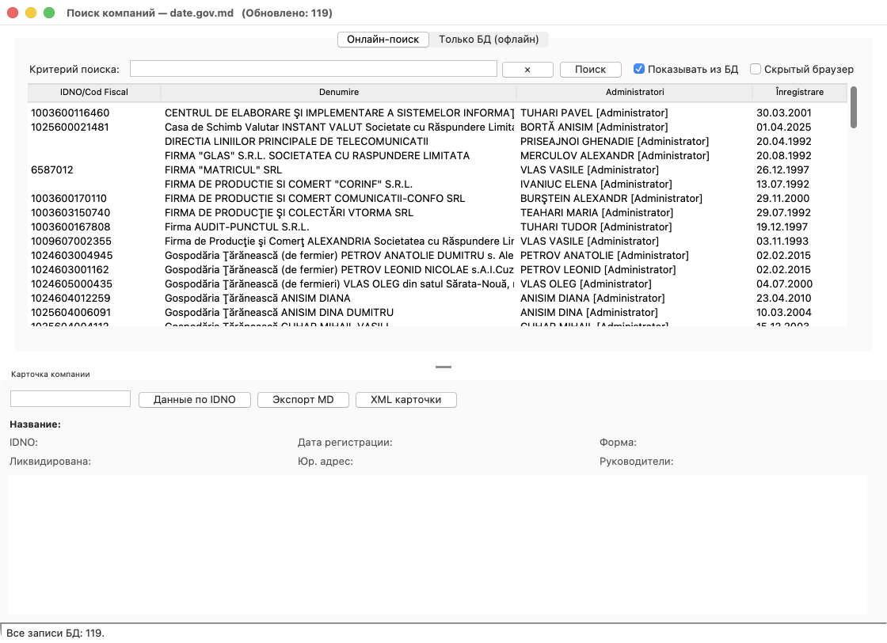

Windows 10/11 · Python 3.12 · Chrome · Demo CRM
Как на обычном ПК поставить Demo CRM и Contragenti, связать их через XML-карточку и получить с date.gov.md IDNO, адрес, руководителей, учредителей и задолженность перед бюджетом — без ручного перенабора.
Программ
2
утилита + демо-CRM
Python
3.12
venv + Tkinter
API
9393
только 127.0.0.1
RAD Studio
нет
exe уже в репозитории
CRM не ходит на портал и не решает капчу. Утилита забирает карточку с date.gov.md и отдаёт XML. Демо-CRM только вызывает утилиту и пишет клиента в свою базу.
Поиск на date.gov.md через настоящий Chrome, локальная SQLite
companies.db, карточка с учредителями и долгами, HTTP-API и режим
--pick.
Окно в стиле EspoCRM, своя база clients.db.
Кнопка «из реестра» запускает Contragenti и сохраняет выбранную карточку
с дедупликацией по IDNO.
Капча. Не включайте «Скрытый браузер». В headless-режиме Google почти всегда требует ручную проверку, и поиск завершается по таймауту.
Команды — для PowerShell. Каталог клона может быть любым.
& "C:\Program Files\Git\cmd\git.exe" clone https://github.com/PavelTuhari/Contragenti.git cd Contragenti
py -3.12 -m venv .venv .\.venv\Scripts\python.exe -m pip install -r requirements.txt
.\.venv\Scripts\python.exe company_search.py --selftest .\crm_delphi\ContragentiCRM.exe --selftest
Файл crm_delphi\crm.ini:
[contragenti] launcher=C:\Contragenti\company_search.py lang=ru
В Demo CRM: Клиенты → добавить из реестра. Выберите компанию в Contragenti. XML-карточка вернётся в CRM.
<counterparty source="date.gov.md" idno="1003600116460"> <idno>1003600116460</idno> <denumire>...</denumire> <adresa>...</adresa> <administratori>...</administratori> <founders><founder name="..." share="..."/></founders> <debts currency="MDL"><debt nr="1" type="..." sum="..."/></debts> </counterparty>
